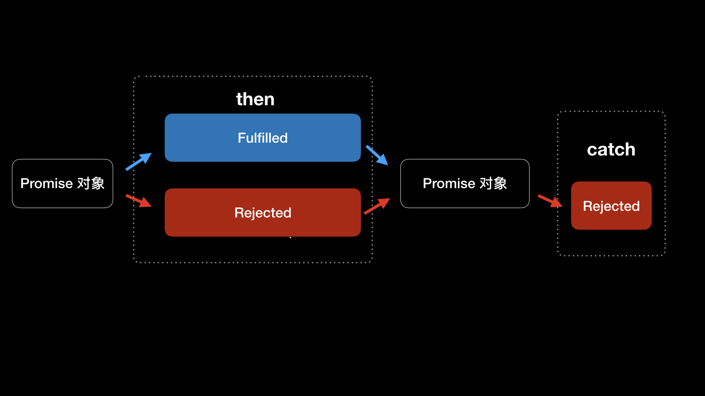

- 00 开篇词 锚定一个点，然后在这个点上深耕.md.html
- 01 建立你自己的iOS开发知识体系.md.html
- 02 App 启动速度怎么做优化与监控？.md.html
- 03 Auto Layout 是怎么进行自动布局的，性能如何？.md.html
- 04 项目大了人员多了，架构怎么设计更合理？.md.html
- 05 链接器：符号是怎么绑定到地址上的？.md.html
- 06 App 如何通过注入动态库的方式实现极速编译调试？.md.html
- 07 Clang、Infer 和 OCLint ，我们应该使用谁来做静态分析？.md.html
- 08 如何利用 Clang 为 App 提质？.md.html
- 09 无侵入的埋点方案如何实现？.md.html
- 10 包大小：如何从资源和代码层面实现全方位瘦身？.md.html
- 11 热点问题答疑（一）：基础模块问题答疑.md.html
- 12 iOS 崩溃千奇百怪，如何全面监控？.md.html
- 13 如何利用 RunLoop 原理去监控卡顿？.md.html
- 14 临近 OOM，如何获取详细内存分配信息，分析内存问题？.md.html
- 15 日志监控：怎样获取 App 中的全量日志？.md.html
- 16 性能监控：衡量 App 质量的那把尺.md.html
- 17 远超你想象的多线程的那些坑.md.html
- 18 怎么减少 App 电量消耗？.md.html
- 19 热点问题答疑（二）：基础模块问题答疑.md.html
- 20 iOS开发的最佳学习路径是什么？.md.html
- 21 除了 Cocoa，iOS还可以用哪些 GUI 框架开发？.md.html
- 22 细说 iOS 响应式框架变迁，哪些思想可以为我所用？.md.html
- 23 如何构造酷炫的物理效果和过场动画效果？.md.html
- 24 A_B 测试：验证决策效果的利器.md.html
- 25 怎样构建底层的发布和订阅事件总线？.md.html
- 26 如何提高 JSON 解析的性能？.md.html
- 27 如何用 Flexbox 思路开发？跟自动布局比，Flexbox 好在哪？.md.html
- 28 怎么应对各种富文本表现需求？.md.html
- 29 如何在 iOS 中进行面向测试驱动开发和面向行为驱动开发？.md.html
- 30 如何制定一套适合自己团队的 iOS 编码规范？.md.html
- 31 iOS 开发学习资料和书单推荐.md.html
- 32 热点问题答疑（三）.md.html
- 33 iOS 系统内核 XNU：App 如何加载？.md.html
- 34 iOS 黑魔法 Runtime Method Swizzling 背后的原理.md.html
- 35 libffi：动态调用和定义 C 函数.md.html
- 36 iOS 是怎么管理内存的？.md.html
- 37 如何编写 Clang 插件？.md.html
- 38 热点问题答疑（四）.md.html
- 39 打通前端与原生的桥梁：JavaScriptCore 能干哪些事情？.md.html
- 40 React Native、Flutter 等，这些跨端方案怎么选？.md.html
- 41 原生布局转到前端布局，开发思路有哪些转变？.md.html
- 42 iOS原生、大前端和Flutter分别是怎么渲染的？.md.html
- 43 剖析使 App 具有动态化和热更新能力的方案.md.html
- 用户故事 我是如何学习这个专栏的？.md.html
- 结束语 慢几步，深几度.md.html
- 捐赠
25 怎样构建底层的发布和订阅事件总线？
你好，我是戴铭。今天，我来跟你聊聊怎么构建事件总线。
事件总线是对发布和订阅设计模式的一种实现，通过发布、订阅可以将组件间一对一和一对多的耦合关系解开。这种设计模式，特别适合数据层通过异步发布数据的方式告知 UI 层订阅者，使得 UI 层和数据层可以不用耦合在一起，在重构数据层或者 UI 层时不影响业务层。
现在，我们先一起来捋一下 iOS 系统里有没有现成可用的技术，当数据层异步发布数据后，可以通过 Delegate 回调给 UI 层来进行展示，但是这个只适合一对一的模式。如果异步处理完后，还需要将数据发布给其他 UI 进行处理和展示的话，就需要继续发布给其他 Delegate，从而造成 Delegate 套 Delegate 的情况。
使用 Block 和使用 Delegate 的情况类似。如果需要不断异步发布给下一个数据订阅者的话，也会出现 Block 回调嵌套其他 Block 回调的情况。
iOS 系统里也有一对多模式的技术，比如 KVO 和 NSNotificationCenter。
使用 KVO 是强依赖属性的，只要更新了属性就会发布给所有的观察者，对应关系过于灵活，难以管控和维护。NSNotificationCenter 也有类似的问题，通过字符串来维护发布者和订阅者之间的关系，不仅可读性差，而且和 KVO 一样面临着难以管控和维护的情况。
总的来说，由于 Delegate 和 Block 只适合做一对一数据传递，KVO 和 NSNotificationCenter 虽然可以支持一对多的数据传递，但存在过于灵活而无法管控和维护的问题，而事件总线需要通过发布和订阅这种可管控方式实现一对一和一对多数据传递。由此可以看出，iOS 现有的 Delegate、Block、KVO、NSNotificationCenter 等技术并不适合来做事件总线。
既然iOS系统提供的技术没有适合做事件总线的，那么有没有好的第三方库可以处理事件总线呢？
其实，响应式第三方库 ReactiveCocoa 和 RxSwift 对事件总线的支持是没有问题的，但这两个库更侧重的是响应式编程，事件总线只是其中很小的一部分。所以，使用它们的话，就有种杀鸡焉用牛刀的感觉。
那么，事件总线有没有小而美的第三方库可用呢？
Promise
现在前端领域有一种模式叫作 Promise，这是一种专门针对异步数据操作编写的一套统一规则的模式。
本质上，这种模式本质是通过 Promise 对象保存异步数据操作，同时 Promise 对象提供统一的异步数据操作事件处理的接口。这样，事件总线的数据订阅和数据发布事件，就可以通过 Promise 对象提供的接口实现出来，比以前通过Delegate回调处理异步事件来说更加合理。
接下来，我们再一起看看，Promise 模式中的 Promise 对象是怎么运作的。
Promise的概念最早是在 E 语言中被提出的。C++ 11 以 std :: promise 模板形式加入到标准库中，随后出现了 CommonJS Promises/A 规范，jQuery 将这个规范实现后引入到 jQuery 1.5 版本中。
Promise 模式大受欢迎后， ECMAScript 6 将其写入了语言标准，统一了用法，并提供了原生 的Promise 对象。 Promise 对象里保存有异步事件，Promise 的统一接口，使得其他异步操作都能够用相同的接口来处理事件。
Promise 对象会有三种状态，分别是 pending、fulfilled、rejected：
- pending 表示 Promise 对象当前正在等待异步事件处理中；
- fulfilled 指的是 Promise 对象当前处理的异步事件已经成功完成；
- rejected 表示 Promise 对象当前处理的异步事件没有成功。
Promise 对象还有两个重要的方法，分别是 then 和 catch。Promise 对象每次执行完 then 和 catch 方法后，这两个方法会返回先前的 Promise 对象，同时根据异步操作结果改变 Promise 对象的状态。
then 和 catch 方法与 Promise 对象状态更改关系，如下图所示：
- 如上图所示，执行 then 方法后返回的Promise 对象是 rejected 状态的话，程序会直接执行 catch 方法。then 方法执行的就是订阅操作，Promise 对象触发 then 方法就是事件总线中的发布操作，then 方法执行完返回 Promise 对象能够继续同步执行多个 then 方法，由此，实现了一个发布操作对应多个订阅事件。
有了 Promise 对象后，整个异步发布和订阅操作都以同步操作的方式表现出来了。Promise 对象不仅能够避免回调层层嵌套，而且通过 Promise的统一接口，使得事件总线的发布和订阅操作更加规范和易用。
PromiseKit
ECMAScript 6 已经内置了 Promise 对象，使得前端开发者无需引入其他库就能够直接使用 Promise 来进行日常开发。随后，Homebrew的作者 Max Howell 开发了 PromiseKit，将 Promise 标准带到了 iOS 中。所以，现在 iOS 上也有了小而美的事件总线技术。
接下来，我就跟你介绍下如何使用 PromiseKit 吧，相信你一定会有种相见恨晚的感觉。
我们先来看看如何使用 Promise 对象的 then 和 catch 方法。
假设有这么一个需求：
- 首先，通过一个异步请求获取当前用户信息；
- 然后，根据获取到的用户信息里的用户编号再去异步请求获取用户的时间轴列表；
- 最后，将用户的时间轴列表数据，赋值给当前类的时间轴列表属性。
这里，我先给出使用 PromiseKit 实现的具体代码，然后我再和你分析其中的关键步骤。
使用PromiseKit实现的代码如下：
firstly {
// 异步获取当前用户信息
fetchUserInfo()
}.then { userInfo in
// 使用异步获取到的用户信息中的 uid 再去异步获取用户的 timeline
fetchUserTimeline(uid: userInfo.uid)
}.then { timeline in
// 记录 timeline
self.timeline = timeline
}.catch {
// 整个方法链的错误都会在这处理
}
可以看出，多次异步请求通过 Promise 的方法调用，看起来就像进行同步操作一样，顺序和逻辑也更加清晰了。使用 then 方法可以让异步操作一个接着一个地按顺序进行。如果异步操作 fetchUserInfo 失败，会返回一个状态是 rejected 的 Promise 对象，返回的这个 Promise对象会跳过后面所有的then 方法直接执行 catch 方法。这就和事件总线中发布事件触发后，订阅事件会一个接一个执行是一样的。
除了 then 和 catch 方法以外，PromiseKit 还有一些好用的方法。
- 比如 always方法。使用了 always 方法以后， Promise 对象每次在执行方法时，都会执行一次 always 方法。
- 再比如when 方法。这个方法的使用场景就是，指定多个异步操作，等这些操作都执行完成后就会执行 when 方法。when 方法类似 GCD 里面的 Dispatch Group，虽然实现的功能一样，但是代码简单了很多，使用起来也更加方便。
PromiseKit 还为苹果的 API 提供了扩展。这些扩展需要单独集成，你可以在PromiseKit 组织页面获取。目前大部分常用的API都有扩展，比如 UIKit、Foundation、CoreLocation、QuartzCore、CloudKit 等等，甚至还支持了第三方的框架 Alamofire。
如果你觉得PromiseKit 提供的扩展还不够，还想让你使用的第三方库也支持 Promises的话，可以通过 PromiseKit 提供的扩展文档，或者直接查看已支持的第三方库（比如 Alamofire ）的扩展实现，去学习如何让其他库也支持 Promises。
小结
在今天这篇文章中，我和你分享了事件总线是什么，以及事件总线解决了什么样的问题。
当工程业务逻辑越来越复杂时，你会发现如果数据层和 UI 层不做解耦，日后想进行重构或者优化就会非常困难。这，也是很多工程前期没有使用事件总线，到了后期会留下大量无法修改的代码的原因所在。
如果使用类似 Promise 这样的技术规范实现事件总线，通过简单、清晰、规范的 Promise 接口将异步的数据获取、业务逻辑、界面串起来，对于日后的维护或重构都会容易很多。
课后小作业
PromiseKit不仅支持 Swift语言，还支持 Objective-C。所以，今天的课后作业是，将 PromiseKit 集成到你的Objective-C工程中，并对其中一个模块进行改造。
很多优秀工具都是用过才知道好，心动不如行动，你也试试吧。
感谢你的收听，欢迎你在评论区给我留言分享你的观点，也欢迎把它分享给更多的朋友一起阅读。
© 2019 - 2023 Liangliang Lee. Powered by gin and hexo-theme-book.